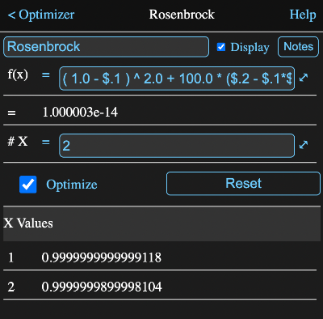

The optimizer manipulates one or more output values to try and obtain the smallest possible scalar value for a single function that depends, either directly or indirectly, on those outputs. The algorithm used is the Powell method if there are multiple X values and the Brent method if there is only one.
You must designate how many outputs the optimizer should produce. These will initially have values of 0 and their conversion unit type will be dimenionless.
These values will be available as parameters 1, 2 etc. and must be used to calculate the value determined by the formula in the f(x) field.
If there is only one X value, then the output value will always be in the range -1 to 1. In most cases you will need to scale this to an appropriately for the problem. If there are multiple X values, then the output values can exceed the -1 to 1 range, but it is still good practice to scale the outputs so the solution values will be relatively normalized.
While the entire calculation could be contained in a single formula, more typically that formula references the values calculated by other tools that in turn eventually depend on the optimizer output values.
Below is an image of the information view of an optimizer for the classic Rosenbrock problem.
The fields are:
This formula field should contain a formula which calculates the scalar value to be minimized.
The value currently calculated by the function is displayed immediately below its formula field.
This formula field should contain or calculate the number of variables to be optimized.
The optimizer will provide output parameters named from "1" to this number and will adjust these parameters in an attempt to minimize the f(x) value.
Use these parameter values in formulas to calculate the actual values you wish adjusted.
Turn this on to have the optimizer run.
While checked, the optimizer will automatically rerun if one of its outputs is requested after one of its inputs has changed.
This resets the output values to zero and also unchecks the optimize box.
This table contains the current output values.
Parameters that can be accessed in the form a.b where a is the tool name and b is the parameter name.